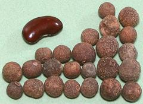
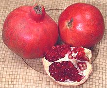

{kind=link}
SAFARI
Users
Varieties - Europe & the Americas
Myrtle
[Common Myrtle; Myrtus communis]
This is the Mediterranean myrtle of myth and legend. Myrtle oils have
been used medicinally since ancient times, and still are today,
particularly for sinus infections. It's only culinary usage is as a
flavoring for an alcoholic beverage called Mirto, made in Sardinia and
Corsica. It is made in two colors, red and white, depending on the color
of the berries used. Red is most common.
Photo by Japs 88 distributed under license Creative Commons
Attribution-ShareAlike 3.0 Unported.
Allspice
 [Jamaica pepper, Myrtle pepper; Pimenta, Pimento (Spanish); English pepper (Hebrew); Pimenta dioica of family Myrtaceae]
Native to the Caribbean, southern Mexico and Central America, this spice is produced by a tree that can grow to 60 feet tall. The name comes from the English, who thought the dreied fruits tasted like a combination of cinnamon, nutmeg and cloves. The tree has now been planted in tropical climates around the world. Allspice is very important in Caribbean cuisine, and has been enthusiasticall adopted in the Levent. In Germany it is used in sausages.
This spice should always be bought as whole dried fruits, as it
declines rapidly if ground. It is soft and easily ground. In the growing
region the leaves are also used as a flavoring, but they become worthless
when dreied, so are not a commercial item. The photo specimens vary
considerably in size, with the largest 0.330 inch diameter and the
smallest 0.227 inch diameter (8.4 to 5.8 mm).
Cloves
[Syzygium aromaticum] While commonly used in Europe and North America, these belong to the Southeast Asian Syzygium genus and are native to Indonesia.
Pomegranate
] [Punica granatum of family Lythraceae | Socotraan Pomegranate (Yemen); Punica protopunica
The fruit of this shrub, native to Iran and eastern Turkey, has been in use since prehistoric times. In the Ancient World it had already spread throughout the Mediterranean region, North Africa, the Caucasus, and India. Around 700 CE it reached southern China and drier parts of Southeast Asia, with Spanish settlers bringing it to California and Latin America in 1769. It is now also cultivated in Arizona. Pomegranates failed to fruit in England, but were planted in the English colonies that are now the southeastern states of the United States.
The smaller, less sweet P. protopunica grows only on the island
of Socotra, Yemen, and is thought to be a remanent population of the
precursor of P. granatum. Pomegranates have many culinary
applications throughout their range, and there are many products made
from them.
Details and Cooking.
Water Caltrop
[Water Chestnut, Buffalo Nut, Bat Nut, Devil Pod; Singhara; Pani-fol (India); Hishi (Japan); Lingjiao (China); Family Lythraceae, Trapa bicornis and Trapa natans]
These strange looking hooked pods are the seeds of floating water plants. They have been cultivated in India and China for more than 3000 years, and were much eaten in Europe from prehistoric times until near the end of the 19th century. They are now nearly extinct in Europe due to climate change and draining of swamps and wetlands, but Trapa natans has become a pest in North America, from Vermont to North Carolina and in Washington State.
The photo is of T. bicornis from East Asia, three in the shell,
(3 inches point to point), and four shelled ones in the middle.
T. natans is more triangular, with much shorter but sharper horns.
It is the species listed as a "noxious weed" in much of the United
States. Seeds do not float, and can remain viable for up to 12 years,
which makes it difficult to eradicate. It's pretty hilarious that
these are in the same plant family as the pomegranate.
Details and Cooking.
Guava
[Guava, Apple Guava; Psidium guajava | Strawberry Guava (red), Lemon Guava (yellow); Psidium cattleianum | (and about 100 more species]
Guavas are native to Mexico, Central America and northern South America, but are now cultivated in Africa, Southeast Asia, the Caribbean, Australia and North America. Here in Los Angeles two varieties are commonly sold, a green Apple Guava, and a smaller yellow variety. This genus does not include the pineapple guava, a popular back yard fruit shrub.
Because Guavas have tough outer skins and the sweet/tart flesh is
filled with very hard seeds, they are difficult to eat out of hand. They
are usually processed into beverages, blocks of guava paste, or jellies.
They are very high in antioxidants and vitamin C, (about 4 times as much
as in an orange).
Giant Guava
[Probably Apple Guava; Psidium guajava ]
This appears to be a variety of the regular green Apple Guava, or a
very closely related species - it did have a somewhat apple like flavor.
At their state of ripeness when the photo was taken, the flesh was still
a bit crisp, lightly sweet, just slightly sour, and the seeds were hard.
The skin was thin and delicate. The uncut specimen in the photo was 4
inches diameter, 3.4 inches long and weighed 15-1/4 ounces. It was
purchased from a large Asian market in Los Angeles (San Gabriel) for
2018 US $3.99 / pound.
Arrayan
[Sartre Guava; Psidium sartorianum | and many other Myrtles]
This is very confusing, because there are many Myrtles (and some non Myrtles) that are called "Arrayan" in Spanish. Most have very small fruit, 0.4 to 0.6 inches diameter. The ones in the photo were from Guatemala, shipped frozen. I'm calling them P. sarorianum because it fits the photos and descriptions I've found, and it's the only one reported to produce fruit as large as 1-1/2 inches, though most trees produce fruit about 0.6 inches in the wild.
The photo specimens were up to 1.65 inches diameter, quite tart but
with excellent flavor, and skin so thin it can be eaten. Like all
guavas, they were full of seeds, but that doesn't bother me, I just
swallow the seeds. Most were not as ripe as the cut specimen, so the
seeds were much less obvious and more tender. These were purchased
frozen from a large Hispanic market in Los Angeles (Burbank) for 2016
US $4.56 per pound.
Pineapple Guava
[Feijoa, Pineapple Guava, Guavasteen; Acca sellowiana]
Native to the highlands of southern Brazil, eastern Paraguay, Uruguay, and northern Argentina, this shrub is now popular in Southern California back yards and grown in other parts of North America as well. It is also grown in (former Soviet) Georgia and Azerbaijan.
The flavor is sweet and aromatic, and the flesh slightly granular. It can be eaten by cutting in half lengthwise and scooping the flesh out with a spoon. It is also used in fruit drinks and smoothies, and in New Zealand it is used in stewed fruit recipes.
Ripeness is not easy to determine. This is generally done with a gentle
squeeze, it should yield but not be soft. Generally, when perfectly ripe
they drop from the bush, but must be gathered daily because they decline
rapidly, browning on the inside. The flower petals are also delightfully
edible, fleshy, sweet and aromatic.
Camu Camu
[Myrciaria dubia]
Native to riverbanks along the Amazon, this cherry size red fruit is now one of those "superfruits" sold in health food markets, generally in powdered or bottled form. It was never significant as a native food because it is much too acidic and needs to be mechanically blended into a smoothie to be appreciated. It is rich in vitamin C (which declines as the fruit matures, and doesn't survive processing well, and is rich in a number of flavonoids.
As with other exotic fruits that become health fads, it is over priced
and being over harvested - heading for endangered status. The government
of Brazil is trying to encourage farming it to save the wild shrubs.
Photo © d0003.
Guavaberry
 [Rumberry; Myrciaria floribunda]
[Rumberry; Myrciaria floribunda]
Closely related to the Camu Camu, this shrub or tree (up to 60 feet high)
bears orange to dark red, nearly black fruit about half the size of a
cherry, The flesh, which has a tang similar to guava, is translucent
and surrounds a single seed. The tree is found wild in Central America,
South America, and many of the Caribbean islands. It has been introduced
to Florida, Hawaii, Bermuda, and the Philippines. Its main use is to
make guavaberry flavored rum, but it can also be made into jam.
Photo by Vmatosc contributed to the Public Domain.
Jabuticaba
[Brazilian Grape, Jabotica, Guaperu, Guapuru, Hivapuru, Sabará, Ybapuru; Myrciaria cauliflora]
Native to Southeast Brazil, this tree bears dark purple fruits up to 1-5/8 inches diameter directly on the trunk and major branches. The purple skin is thick and astringent, covering a sweet white gelatinous flesh and a single seed. Where they grow, they are popped as a snack as we do grapes in North America. They are also made into jams, wine, and liqueurs.
Because their shelf life is a mere 3 to 4 days, they are rarely seen
outside the growing regions. The fruit contains antioxidants and
compounds that may be useful against cancer and inflamation.
Photo by Adamantiaf contributed to the public domain.
Cagaita
[cagaiteira; Stenocalyx dysentericus]
Native to Brazil, these trees can produce about 1500 fruits between the
months of September and December. The fruits are yellow, a little over
an inch in diameter with a single seed loose in the center. They have a
sweet - sour, slightly astringent taste. The fruit can be kept for only
about 3 days unrefrigerated, maybe 10 days in the fridge, so it isn't
seen much outside the growing region. It can be eaten out of hand, but
if you eat much of it that way it'll give you the runs. It is also used
to make beverages, sweets, jams and sherbets.
Photo by Conrado distributed under license Creative Commons
Attribution-ShareAlike 3.0 Unported.
Pitomba
[Uvalha do campo, Ubaid do campo, Uvalheira; Eugenia luschnathiana]
Native to Bahia Brazil, this tree, which grows to 30 feet high, is
cultivated for it's fruit. It has been introduced to Florida but has not
become popular there. The fruit is up to 2 inches diameter, containing
one or two seeds. The bright orange/yellow fruits have a thin skin over
a soft, juicy, aromatic, golden yellow flesh. The taste is somewhat tart
and slightly resinous. These fruits are used to make jams, jellies and
carbonated beverages. This pitomba is often confused with a soapberry
fruit also called Pitomba.
This one has prominent sepals (stiff petal-like features) projecting
from where the flower was, while the soapberry fruit is browner and
smooth at the flower end. Photo ©
Huertas Urbanas.
Araza
 [Araca-boi; Eugenia stipitata]
[Araca-boi; Eugenia stipitata]
Native to the Amazon Rainforest of Brazil, this small to medium size tree
bears a fruit with distinctive flavor, and is about as sour as lemons.
It is usually used to make juice or jam, or as a culinary souring agent.
Fruits can be as large 3-1/2 inches diameter and as heavy as 1-1/2 pounds,
the tree is drought tolerant, so there is interest in developing more
commercially viable varieties (the current variety's fruit is difficult
to ship). Some are planted in California, but not yet sold commercially.
Photo by U.S. Department of Agriculture = public domain.
Surinam Cherry
[Brazilian Cherry, Cayenne Cherry; Pitanga (Brazil); Nangapirí (South America); Eugenia uniflora]
Native to northeastern South America, this plant bears white flowers that
mature into red fruit about 3/4 inch diameter. The fruit ranges
from sour to sweet, the darker they are in color the sweeter. The primary
use of the fruits is as a flavor base for jams and jellies. Surinam Cherry
was introduced to Bermuda as an ornamental, but has gotten out of hand
there.
Photo distributed under license Creative Commons
Attribution-ShareAlike 3.0 Unported.
Rain Forest Plum
[Cambuí Roxo, Murtinha; Eugenia candolleana]
Native to the Atlantic rain forest of Brazil, this small tree produces
dark purple fruit about 1 inch long and a little less in diameter. The
firm white fleshed fruit with a single large seed is moderately sweet
and can be eaten out of hand or made into jams.
Photo by Jorge Stolfi distributed under license Creative Commons
Attribution-ShareAlike 3.0 Unported.
Cherry of the Rio Grande
[Eugenia involucrata syn: Eugenia aggregata]
Native to Brazil, this shrub is now grown to some extent in Florida. It
bears red to deep purple fruit about 1 inch in diameter with a taste
similar to a sweet cherry. It can be eaten out of hand or used to make
juice, jam or jelly.
Photo by I likE plants! distributed under license Creative
Commons
Attribution-ShareAlike 2.0 Generic.
Luma
[cauchaos; Amomyrtus luma]
Native to the Amazon Rainforest of Brazil, this large tree produces small
(up to about 5/8 inch diameter) dark purple to black fruit called cauchasos.
They are mainly used to make marmalade. Some trees have been planted in
Spain, either for fruit or the very hard wood the tree produces.
Photo by Roberto Bahamonde Lugar contributed to the public
domain.
Ugni
[Ugniberry, Chilean Guava, Strawberry Myrtle; Ugni molinae]
Native to Chili and southern Argentina, this berry became a favorite fruit
of Queen Victoria, but it's just a curiosity in England today. Use of the
fruit in cuisine is limited to Southern Chili, where they also use it to
make a liqueur called Murtado.
Photo distributed under license Creative Commons
Attribution-ShareAlike 3.0 Unported.
Puca
[Mouriri pusa]
Native to the rain forests of northern and central Brazil, this short to
medium tree bears brownish purple fruit with a thin skin and sweet tasty
pulp. Flowers and fruit are attached directly to the main stems. This fruit
is not yet well known nor cultivated, but is eaten fresh where available.
Photo by Conrado distributed under license Creative Commons
Attribution-ShareAlike 3.0 Unported.
Evening Primrose
[Common Evening Primrose, Evening Star; King's Cure-all, Fever Plant (England); Oenothera biennis]
This plant, native to Eastern and Central North America, has been widely
planted in northeastern Europe where it quickly became a folk remedy. It
is noted for its seeds containing a large amount of gamma-linolenic acid,
which has unique properties. It is considered an anti-inflammatory, used
to treat skin problems and may have potential as an anti-cancer agent.
The leaves are edible and were traditionally used as a leaf vegetable.
Photo by Dcrjsr distributed under license Creative Commons
Attribution-ShareAlike 3.0 Unported.
Fireweed
[Great Willow-herb (Canada); Bomb Weed, Rosebay, Willowherb (England); Epilobium angustifolium]
Native to the temperate Northern Hemisphere, this opportunistic herb quickly establishes itself in disturbed ground, whether from fire, railroad construction, bomb craters or whatever.
Young shoots are edible and were gathered by American Indians in combination with other greens. Stems of more mature plants can still be eaten if peeled. Roots are edible roasted if the outer skin is scraped off and the dark central thread is removed. They are best gathered before the start of flowering, when they will become bitter. Fireweed is high in vitamin C and pro-vitamin A.
In Alaska, fireweed is used to flavor confections, and in Russia
leaves were used as a substitute for tea (Kapor tea). The leaves can be
fermented as is done to make black tea.
Varieties - Australia & South and Southeast Asia
Cloves
[Syzygium aromaticum]
Differing from most of the culinary Syzygium species, cloves are
the dried unopened flower buds rather than the mature fruit. These highly
aromatic flowers grow in big clusters on a tree native to Indonesia (the
leading producer). They are now also grown in India, Madagascar,
Zanzibar, Pakistan and Sri Lanka. The tree grows to about 35 feet. The
flower buds are harvested when they turn red but have not yet started to
open. They are dried, and then packaged for shipping.
Indonesian Bay Leaf
[Daun Salam (Indonesia), Salam Leaf, Indian Bay Leaf (obsolete); Eugenia Polyantha]
Native to Borneo through Indonesia, this leaf is used in cooking only in that region - but in Indonesia in particular, it is used a lot. Fresh leaves are used in curries and with meat, and dried leaves when fresh are not available. Packages of dried leaves are often labeled "Indian Bay Leaf", an obsolete usage from when Indonesia was called East India.
Many cookbooks, presuming you can't get Daun Salam, suggest using European
bay leaves. This is bad advice - Salam is not at all related to either
European or Indian bay leaves, both of which are highly aromatic Laurels with
an entirely different and more powerful flavor. Daun Salam is a myrtle. The
leaves are thinner and less aromatic, more earthy, and with a definite hint
of citrus. A much better substitute is Curry Leaf (which is a citrus), but
Salam is not as strong, so use a little less.
Details and Cooking.
Melaleuca
[Tea Tree Oil; Melaleuca alternifolia | Cajuput oil, Paperbark; Melaleuca leucadendra]
The only association these highly medicinal Australian trees have with the culinary arts is as an ingredient in burn ointment and topical disinfectants. Tea tree oil is made mainly from Melaleuca rather than the closely related Tea Tree proper (Leptospermum). I must say, though, that I very much like the tea tree oil soap I buy from Trader Joe's.
Melaleuca quinquenervia was planted in Florida to help drain
swamps. Now they'd really rather have the swamps back. These trees spread
quickly, and stands are so dense they are totally impenetrable. They are
so flammable the former swamps are prone to firestorms. The photo
specimen is a twig from my Melaleuca leucadendra.
Tea Tree
[Leptospermum polygalifolium and other species]
Formerly a tea high in vitamin C was made from the leaves of this shrub
or small tree to ward off scurvy. Native to Australia, the main culinary
use of Tea Tree today is in the production of honey. Due to the nature
of the plant and its nectar, Tea Tree honey is the most antiseptic honey
known.
Photo of Leptospermum squarrosum by JJ Harrison
distributed under license Creative Commons
Attribution-ShareAlike 3.0 Unported.
Eucalyptus
[Eucalyptus many species]
These highly medicinal trees, native to Australia, have many uses, but their only culinary use is as a flavoring - mainly for throat lozenges and the like. It is interesting as the tallest flowering plant, and the third tallest of all plants, after Coast Redwood and Douglas Fir (both conifers).
Eucalyptus was brought to California for lumber - a failed project because eucalyptus wood twists as at dries, destroying anything built with it. It did, however, serve exceedingly well as wind breaks. There is no wind that can knock over a blue gum - unless you bought it from a nursery, in which case a medium breeze will knock it over (root ball problem).
The photo specimen is from one of my Blue Gums. Note the bug bites.
Back in the '80s you never saw such a thing, but now, just as in
Australia, you rarely find an unchewed leaf. Some say the pests were
brought deliberately by eucalyptus haters, but if so, their plan has
failed - the trees are pretty much unfazed.
Malabar Plum
Native to Southeast Asia, this tree has been introduced worldwide, but
especially in the Indian state of Karela. It is most often eaten raw,
often with a sprinkle of spiced sugar to counter a slightly bitter
aftertaste. In some regions this aftertaste does not appear. The flesh
is crisp and watery and the fruit may range from light green through
yellow to red when ripe depending on variety. It is usually between 1
and 1-3/4 inches diameter. Ripeness can be judged by shaking the fruit
to see if the seeds rattle around. The photo specimens were grown in
South Africa.
Photo by JonRichfield distributed under license
Creative Commons
Attribution-ShareAlike 3.0 Unported.
Chebula
[Black Myrobalan, Chebulic Myrobalan; Terminalia chebula]
Native from India and Nepal east to Yunan China and south to Sri Lanka
and Southeast Asia, this tree grows to almost 100 feet tall. It's ripe
fruit, 3/4 to 1-3/4 inches long, looks like a ridged and wrinkled nut,
but it is usually picked unripe when it is smooth. The fruit is pickled,
preserved in sugar or honey syrup, or made into preserves. While long
used in Indian Aurvedic medecine, it has now come to the attention of
Western researchers as an aid in joint comfort and mobility.
Photo by Zhangzhugang distributed under license
Creative Commons
Attribution-ShareAlike 3.0 Unported.
Kakadu Plum
[Gubinge, Billygoat Plum, Murunga; Terminalia ferdinandiana]
This small to medium tree (to 46 feet) is native to northwestern
tropical forests of Australia, and has been used by Aboriginal
Australians for food. Usually it is eaten raw, but can be made into
jam. It is most noted for having more vitamin C than any other known
fruit, about 50 times as much as Oranges - however, cultivated fruit
does not approach the concentration in fruit gathered from the harsh
wilderness. The yellow-green fruit is about 0.79 inch long and 0.39
inch diameter (2 x 1 cm). Due to safety concerns, the US FDA has
rejected Kakadu Plum concentrate as a New Dietary Ingredient.
Photo is from
Australian Seed, which has seeds for sale.
Lau Lau
[Water Cherry, Watery Rose Apple; Jambu air (Malay); Syzygium aqueum]
This tree, native to Indonesia and Papua New Guinea, produces waxy red or
yellow berry with crisp flesh. The leaves are also edible and used as
food wrappers.
Photo by Tu7uh distributed under license Creative Commons
Attribution-ShareAlike 3.0 Unported.
Brush Cherry
[Scrub Cherry; Syzygium australe]
Native to the rainforests of Eastern Australia, this shrub is popular in
Australia for hedges. The pleasantly sour fruit can be eaten fresh or
cooked, and is often made into jams and jellies.
Photo by John Moss contributed to the public domain.
Riberry
[Riberry, Small Leaved Lilli Pilli, Cherry Satinash, Cherry Alder, Clove Lilli Pilli; Syzygium luehmannii]
Native to the rainforests of Eastern Australia, this small to medium tree
became popular during the bushfood cuisine movement of the 1980s. The
fruit has a tart, cranberry-like flavor with a hint of clove. It is eaten
straight off the tree, used in sauces, syrups and confectionery, and made
into jam.
Photo by Poyt448 contributed to the public domain.
Malay Apple
[Pommerac (Caribbean); Mountain Apple, Ohia ai; (Hawaii); Jambu Merah (Malay); Jambu Bol (Indonesia); Malay Rose Apple, Otaheite Cashew; Syzygium malaccense]
Native to Malaysia, Indonesia and Vietnam, this fruiting tree has been
introduced throughout the tropics (the photo was taken in Trinidad and
Tobago). The fruit is made into jam by stewing the white flesh with brown
sugar and ginger.
Photo by Justinisaacs distributed under license
Creative Commons
Attribution-ShareAlike 3.0 Unported.
Coolamon
[Watermelon Tree, Durobby, Robby; Syzygium moorei]
Native to New South Wales, Australia, this tree produces a white or light
green fruit up to 2-1/3 inches diameter. It is unpleasant to eat raw, but
it works well in mixed preserves.
Photo by Zaareo distributed under license Creative Commons
Attribution-ShareAlike 3.0 Unported.
Blue Lilli Pilli
[Syzygium oleosum | Magenta Lilli Pilli Syzygium paniculatum]
Native to the rainforests of Eastern Australia, this small to medium tree
bears purplish blue fruit up to 1-1/2 inches in diameter. It is pleasantly
crisp, lightly sweet and aromatic eaten raw, but it is also made into
jams, jellies and wine. The Magenta Lilli Pilli is very similar with a
sour apple flavor. It is also eaten fresh and made into jams.
Photo by John Moss contributed to the public domain.
Paperbark Satinash
[Syzygium papyraceum]
Native to the coastal rainforest of northern Queensland, Australia, this
small to medium tree bears bright purple edible fruit about 1 inch long.
The tree is tolerant of temeprate climates, provided there is plenty of
moisture.
Photo by Peter Woodard contributed to the public domain.
Wax Apple
[Champoo (from Thai), Love Apple, Java Apple, Royal Apple, Bellfruit, Jamaican Apple, Water Apple, Mountain Apple, Cloud Apple, Wax Jambu; Syzygium samarangense]
Native throughout the Southeast Asian region this tree has been introduced to other tropical regions. It bears fruits up to 2-1/3 inches long that may be of any color from white to black. Generally the darkest and lightest are considered best because they are the sweetest. The flesh is light and watery, comparable to watermelon in texture, but sweeter and more aromatic. The entire fruit is eaten, except the seeds (0 to 3).
Some are now grown in Southern California and occasionally appear
Farmer's Markets from July to November. The photo specimens were
purchased from a Los Angeles Farmer's Market (Montrose) for 2016 US
$8 / pound in early November.
Jaambul
[Java Plum, Jaam Berry, Black Plum, Duhat Plum, Jambolan Plum, Portuguese Plum; Syzygium cumini]
Native to India, Pakistan, Sri Lanka, Nepal, Bangladesh and Indonesia,
this tree has been taken to other regions of the tropics, particularly in
former British colonies. It produces dark crimson to black fruit (there
is a white fruited variety also). The fruits, which can be up to 2 inches
long, have a flavor that's a combination of sweet, mildly sour and
astringent. Quality of flavor varies. The fruit is eaten fresh if of
good flavor, made into preserves, juiced to flavor ice cream, and made
into wine and vinegar. Photo by A Junaid Alam Khan
contributed to the public domain.
Mangrove Apple
[Sonneratia caseolaris]
This tree inhabits mud flats from Africa to the Philippines, including
northern Australia and Hainan Island, China. Both leaves and fruit are
eaten in some regions of its range.
Photo by Wibowo Djatmiko distributed under license Creative
Commons
Attribution-ShareAlike 3.0 Unported.
Cedar Bay Cherry
[Mountain Stopper (Aus); Nioi (Hawaii); Eugenia reinwardtiana]
Of all of genus Eugenia, this is the only one that is native to
Australia. The fruit, which is high in anti-oxidants, is eaten out of
hand, used to flavor drinks and candies, and to make preserves.
Photo by Zarrio distributed under license Creative Commons
Attribution-ShareAlike 3.0 Unported.
Midgen Berry
[Midyim; Austromyrtus dulcis]
Native to Queensland and New South Wales in eastern Australia, this berry is
a popular bush food for both indigenous and non-indigenous Australians. The
berries are sweet and aromatic with good gingery flavor, but are next to
impossible to exploit commercially due to their "melt in the mouth"
tenderness. They pretty much have to be eaten right off the shrub.
Photo by Zarrio distributed under license Creative Commons
Attribution-ShareAlike 3.0 Unported.
Lemon Myrtle
[Lemon Scented Ironwood, Sweet Verbena Tree, Sweet Verbena Myrtle, Lemon Scented Verbena, Lemon Scented Backhousia; Backhousia citriodora]
The leaves of this plant, native to Queensland, Australia, are highly
regarded for their lemony flavor - generally considered better than lemon
grass. They are used to impart a lemon flavor to all manner of cooked dishes
and are also used in tea blends. They are of particularly valuable in
imparting a lemon flavor to milk based recipes where lemon juice could
cause curdling.
Photo by HelloMojo distributed under license Creative Commons
Attribution-ShareAlike 3.0 Unported.
Cinnamon Myrtle
[Carrol, Carrol Ironwood, Neverbreak, Ironwood, Grey Myrtle, Australian Lancewood; Backhousia myrtifolia]
The leaves of this plant, native to Queensland, Australia, became popular as
a flavoring in the bushfood cuisine movement of the late 1980s and early 1990s.
Photo by HelloMojo distributed under license Creative Commons
Attribution-ShareAlike 3.0 Unported.
Anise Myrtle
[Ringwood, Aniseed tree; Syzygium anisatum]
The leaves of this plant, native to Queensland, Australia, became popular as
a flavoring in the bushfood cuisine movement of the late 1980s and early 1990s.
Photo by John Moss distributed under license Creative Commons
Attribution-ShareAlike 3.0 Unported.
Ceylon Hill Gooseberry
[Downy Rose Myrtle, Hill Guava (English); Downy Myrtle, Rose Myrtle (Florida); Isenberg Bush (Hawaii); Rhodomyrtus tomentosa]
This shrub is found all over Southeast Asia in wetter environments. It
yields round purple fruit a little over 1/2 inch diameter. The fruits can
be made into pies and jams, or used in salads. In Vietnam it is used to make
a wine called ruou sim.
Photo by Franz Xaver distributed under license Creative Commons
Attribution-ShareAlike 3.0 Unported.
Links
- M1 - Myrtles - University of Hawaii at Manoa.